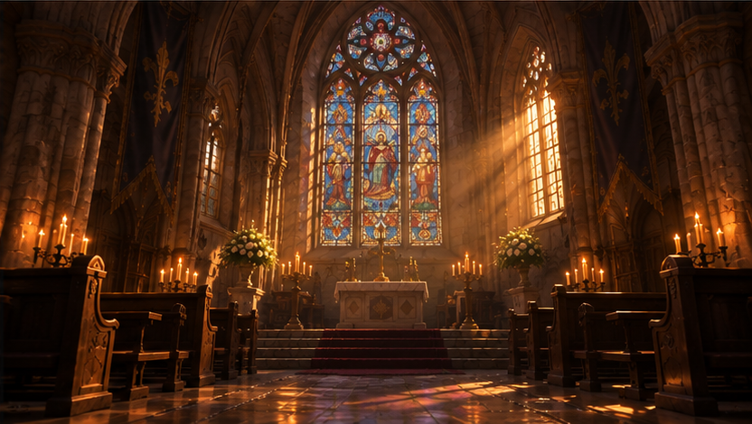

The Civilizations
冒険・戦闘・クライマックス
壮大なオーケストラによるシネマティック楽曲。冒険や戦闘、物語のクライマックスを想定。
音源を読み込めませんでした。
COMPOSER / SOUND CREATOR
物語に、音楽という灯りを。
ゲーム・映像向けのオリジナルBGMを制作します。
制作した楽曲の一部をご紹介します。
冒険・戦闘・クライマックス
壮大なオーケストラによるシネマティック楽曲。冒険や戦闘、物語のクライマックスを想定。
音源を読み込めませんでした。
街・拠点・穏やかな探索
幻想的な街の中央広場をイメージしたBGM。穏やかな日常と、少し不思議な世界観を表現。
音源を読み込めませんでした。
街歩き・日常・穏やかな会話
明るく温かい日常をイメージした楽曲。散歩や街歩き、穏やかな会話シーンなどに。
音源を読み込めませんでした。

礼拝堂・厳かな場面
バッハのコラールに着想を得た、教会をイメージした楽曲。荘厳で落ち着いた雰囲気。
音源を読み込めませんでした。
BEHIND THE MUSIC
SoundLanternは、音楽を通してさまざまな世界や物語を描く、 音楽制作プロジェクトです。
壮大な冒険から、穏やかな日常、 心に残る小さな瞬間まで。
一つひとつの世界観や感情を大切にしながら、 聴く人の心にそっと寄り添う音楽を作っています。
WORK WITH SOUNDLANTERN
ゲーム・映像・物語の世界観に寄り添う、オリジナルBGMを制作します。
相談・お見積もりのみでも、お気軽にお問い合わせください。
ゲーム・映像・物語向けの音楽を、1曲から。
料金は曲の長さ・編成・用途・納期に応じてお見積もりします。大編成のオーケストラや複数曲の制作も、内容とスケジュールを確認してご案内します。
既存曲の編曲もご相談いただけます。ご希望の編成や用途をお聞かせください。
ファンタジー、温かい日常、教会を思わせる神聖な雰囲気など。掲載楽曲を参考に、作品の世界観や使いたい場面をお聞かせください。
用途やイメージ、ご希望を伺います。まだ内容が固まっていなくても大丈夫です。
曲の長さ・編成・納期・利用範囲・修正範囲・支払い条件を確認します。条件に合意するまでは制作を始めません。
短い試聴音源などで、曲調・メロディ・主要な楽器のイメージをすり合わせます。
確認した方向性で楽曲を仕上げ、必要な調整を行います。
着手前に取り決めた方法と時期に沿って、お支払い・完成音源の納品を行います。
以下を分かる範囲でお知らせください。未定の項目は空欄で構いません。
ご依頼者名／団体名： 作品の概要・音楽の使用用途： 希望する曲数と長さ： イメージや参考曲： 希望納期： ご予算： ループの必要性： その他のご希望： ※未定の項目は空欄で構いません。